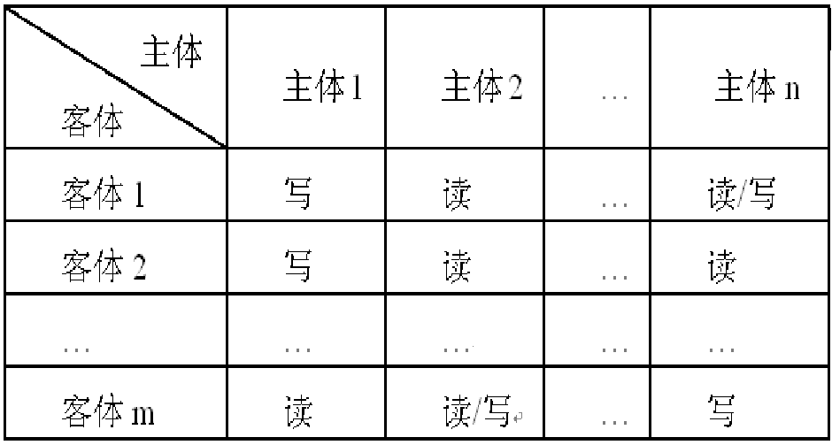

六、数据库的安全性
数据库的安全性概述
- 安全性对于任何一个数据库管理系统来说都是至关重要的。
- ==数据库安全性==是保护数据库不被非法使用和防止==非法==用户==恶意造成==的破坏，
- 安全性措施的防范对象是==非法用户的进入和合法用户的非法操作==，
- ==数据库完整性==则是保护数据库以防止==合法==用户==无意造成的破坏==
- 而完整性措施主要防范==不合语义的数据==进入数据库
- 什么是数据库的安全性
- 数据库的安全性是指保护数据库，防止因用户非法使用数据库造成数据泄露、更改或破坏。
- 安全性问题不是数据库系统所独有的，所有计算机系统都有这个问题。只是在数据库系统中大量数据集中存放，而且为许多最终用户直接共享，从而使安全性问题更为突出。
- 什么是数据的保密
- 数据保密是指用户合法地访问到机密数据后能否对这些数据保密。
- 通过制订法律道德准则和政策法规来保证。
计算机安全性概述
- TCSEC/TDI安全级别划分
| 安全级别 | 定义 |
|---|---|
| A1 | 验证设计（Verified Design） |
| B3 | 安全域（Security Domains） |
| B2 | 结构化保护（Structural Protection） |
| B1 | 标记安全保护(Labeled Security Protection) |
| C2 | 受控的存取保护(Controlled Access Protection) |
| C1 | 自主安全保护(Discretionary Security Protection) |
| D | 最小保护（Minimal Protection） |
- D级
- 将一切不符合更高标准的系统均归于D组
- 典型例子：DOS是安全标准为D的操作系统, DOS在安全性方面几乎没有什么专门的机制来保障
- C1级
- 非常初级的自主安全保护
- 能够实现对用户和数据的分离，进行==自主存取控制==（DAC），==保护或限制用户权限==的传播。
-
现有的商业系统稍作改进即可满足C1
-
C2级
- 安全产品的最低档次
- 提供受控的存取保护，将C1级的DAC进一步细化，以==个人身份注册==负责，并实施==审计和资源隔离==
- 达到C2级的产品在其名称中往往不突出“安全”(Security)这一特色
-
典型例子
- 操作系统
- Microsoft的Windows NT 3.5，
- 数字设备公司的Open VMS VAX 6.0和6.1
- 数据库:Oracle 7、SQL Server 2000、Sybase 11
-
B1级
- 标记安全保护。“安全”(Security)或“可信的(Trusted) 产品。
- 对系统的数据加以标记，对标记的主体和客体实施==强制存取控制==（MAC）、审计等安全机制
- 典型例子
- 操作系统
- 数字设备公司的SEVMS VAX Version 6.0
- 惠普公司的HP-UX BLS release 9.0.9+
- 数据库: Sybase Secure 11、Trusted Oracle
安全技术分类
数据库系统所采用的安全技术主要包括以下几类：
- ==访问控制技术==：防止未授权的人访问系统本身,这种安全问题对所有计算机系统都存在。访问控制技术主要通过创建用户帐户和口令、由DBMS控制登录过程来实现。
- ==存取控制技术==：DBMS必须提供相应的技术保证用户只能访问他的权限范围内的数据，而不能访问数据库的其他内容。
- ==数据加密技术==：用于保护敏感数据的传输和存储，可以对数据库的敏感数据提供额外的保护。
- ==数据库审计==：审计是在数据库系统运行期间，记录数据库的访问情况，以利用审计数据分析数据库是否受到非法存取
存取控制
- 存取控制机制的功能
- 数据库安全最重要的是：确保只授权给所有有资格的用户访问数据库的权限，同时令所有未被授权的人员无法接近数据，
-
这主要通过数据库系统的存取控制机制实现。
-
存取控制机制的组成
- ==定义用户权限==
- 在数据库系统中，为了保证用户只能访问他有权存取的数据，必须预先对每个用户定义存取权限
- ==合法权限检查==
- 对于通过鉴定获得上机权的用户(即合法用户)，系统根据他的存取权限定义对他的各种操作请求进行控制，确保他只执行合法操作。
- ==用户权限定义==和==合法权限检查==机制一起组成了DBMS的==安全子系统==。
- 当前大型DBMS都支持==C2级中的自主存取控制==(DAC)，有些DBMS同时还支持==B1级中的强制存取控制==(MAC)。
常用存取控制方法
- 自主存取控制（Discretionary Access Control ,DAC）
- C2级、 灵活
- ==同一用户==对于==不同的数据对象==有==不同的存取权限==
- 不同的用户对==同一对象==也有==不同的权限==
- 用户还可将其拥有的存取权限转授给其他用户
- 强制存取控制（Mandatory Access Control, MAC）
- B1级、严格
- ==每一个数据对象==被标以一定的密级
- ==每一个用户==也被授予某一个级别的许可证
- 对于任意一个对象，只有具有合法许可证的用户才可以存取
自主存取控制
- ==主体==（Subject）是指一个提出请求或要求的实体，主体可以是DBMS所管理的实际用户，或其它任何代表用户行为的进程、作业和程序。
- ==客体==（Object）是接受其他实体访问的被动实体，是受主体操纵，客体可以是文件、记录、视图等。
- ==控制策略==是主体对客体的操作行为集和约束条件集，即主体对客体的访问规则集。
-
在自主存取控制模型中，主体、客体和控制策略构成了一个矩阵，矩阵的列标识主体，矩阵的行表示客体,矩阵中的元素是控制策略(如读、写、删除和修改等)
-
访问控制矩阵
- 主体按访问控制矩阵中的权限要求访问客体，每个用户对每个数据对象都要给定某个级别的存取权限,例如读、写等。
- 当用户申请以某种方式存取某个数据对象时，系统根据存取矩阵判断用户是否具备此项操作权限，以此决定是否许可用户执行该操作。
- 在自主访问控制中，访问控制的实施由系统完成。
| 访问控制矩阵 (个人理解就是一个主体客体的权限表，涉及每一个客体和每一个客体之间具体的操作权限) |
 |
|---|---|
- 通过 SQL 的 GRANT 语句和 REVOKE 语句实现
- 用户权限组成
- 数据对象
- 操作类型
- 定义存取权限称为==授权==
-
定义用户可以在哪些数据库对象上进行哪些类型的操作
-
授权粒度
- 授权粒度是指可以定义的数据对象的范围
- 它是衡量授权机制是否==灵活==的一个重要指标。
- 授权定义中数据对象的==粒度越细==，即可以定义的==数据对象的范围越小==，授权子系统就==越灵活== ，但系统定义与权限检查的==开销将增加==。
- 关系数据库中授权的数据对象粒度
- 数据库、 表、 属性列、 行
-
能否提供与数据值有关的授权反映了授权子系统精巧程度
-
自主存取控制优点：能够通过授权机制有效地控制其他用户对敏感数据的存取
-
自主存取控制缺点：
-
由于存取权限是“自主”的，==权限可以传播==，接受授权的用户就可以“非法”传播数据，可能存在数据的“无意泄露”
-
原因：这种机制仅仅通过对数据的存取权限来进行安全控制，而==数据本身并无安全性标记==。
-
解决：对系统控制下的所有主客体实施==强制存取控制==策略
强制存取控制
- 什么是强制存取控制
- 强制存取控制(MAC)是指系统为保证更高程度的安全性，按照TDI/TCSEC标准中安全策略的要求，所采取的强制存取检查手段。
- MAC不是用户能直接感知或进行控制的。
-
MAC适用于对数据有严格而固定密级分类的部门
- 军事部门
- 政府部门
-
强制存取控制策略
- 需要在安全级别基础上对数据或用户进行分类，通过对主体和客体的已分配的安全属性进行匹配判断,决定主体是否有权对客体进行进一步的访问操作
- (1)主体和客体被标记成不同的安全分类级别
- 安全分类级别被分为若干级别，典型的级别是：绝密-TS（Top Secret）、机密-S（Secret）、可信-C（Confidential）和公开（Public）。
- 主体的敏感度标记称为==许可证级别==(Clearance Level)
- 客体的敏感度标记称为==密级==(Classification Level)
-
(2)MAC机制就是通过对比主体的安全级别和客体的安全级别，最终确定主体能否存取客体
-
强制存取控制规则：
- （1）仅当主体的许可证级别==大于或等于==客体的密级时，该主体==才能读==取相应的客体；
- 许可证级别低的主体不能读取安全级别比他高的客体
-
（2）仅当主体的许可证级别==等于==客体的密级时，该主体==才能写==相应的客体。
- 规则2禁止主体写安全分类级别比他的许可证级别低的客体。
- 如果违反这个规则，那么就将允许信息从较高的安全级别流向较低的安全级别，这就违反了多级安全性的基本原则
- 规则修正：
- 主体的许可证级别 <=客体的密级 👉主体能写客体
- 即用户可为写入的数据对象赋予高于自己的许可证级别的密级，一旦数据被写入，该用户自己也不能再读该数据对象了。
- 规则的共同点：禁止了拥有高许可证级别的主体更新低密级的数据对象，防止敏感数据泄漏
-
强制存取控制的特点
- MAC是对数据本身进行密级标记,无论数据如何复制,标记与数据是一个不可分的整体,
- 只有符合密级标记要求的用户才可以操纵数据,从而提供了更高级别的安全性
- MAC与DAC
- DAC与MAC共同构成DBMS的安全机制
- 实现MAC时要首先实现DAC
- 原因：较高安全性级别提供的安全保护要包含较低级别的所有保护
数据加密
- 数据加密：防止数据库中数据在存储和传输中失密的有效手段
- 加密的基本思想
- 根据一定的算法将原始数据（术语为明文，Plain text）变换为不可直接识别的格式（术语为密文，Cipher text），
- 不知道解密算法的人无法获知数据的内容
- 加密方法
- 替换方法：使用密钥（Encryption Key）将明文中的每一个字符转换为密文中的一个字符
- 置换方法：将明文的字符按不同的顺序重新排列
- 混合方法：美国1977年制定的官方加密标准：数据加密标准（Data Encryption Standard，简称DES）
审计
- 用户标识与鉴别、存取控制仅是安全性标准的一个重要方面
- 为了使DBMS达到一定的安全级别，还需要在其他方面提供相应的支持
- 例如按照TDI／TCSEC标准中安全策略的要求。
- 什么是审计
- ==审计日志==（Audit Log）
- 将用户对数据库的所有操作记录在上面
- DBA利用审计日志
- 找出非法存取数据的人、时间和内容
- C2以上安全级别的DBMS必须具有
统计数据库安全性
- 统计数据库的特点
- 允许用户查询聚集类型的信息(例如合计、平均值等)
- 不允许查询单个记录信息
- 例：允许查询“程序员的平均工资是多少？”
- 不允许查询“程序员张勇的工资？”
- 统计数据库中特殊的安全性问题
- 在统计数据库中存在着特殊的安全性问题，即可能存在着隐蔽的信息通道，使得可以从合法的查询中推导出不合法的信息